TOC
Lua与Unity交互原理
本文以xLua为例，
一句话简单说明xLua与Unity互相调用的原理：通过栈交换数据。
从三方面解释：
- C#调用xLua（
[CSharpCallLua],[HotFix]） - xLua调用C# (
[LuaCallCSharp]、[RelectionUse]) - 热更新原理
一些基本概念
- Lua堆栈： 一种索引可以是正数或者负数的结构，并规定正数1永远表示栈底，负数-1永远表示栈顶。如-2表示，栈顶倒数第二个。
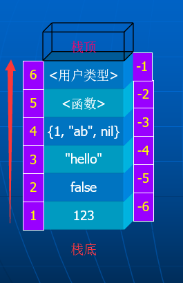 - C#中using LuaAPI = XLua.LuaDLL.Lua： 使用xLua.dll（XLua.LuaDLL.Lua对它进行.NET封装）与Stack进行各种pushXX，toXX，isXX操作。
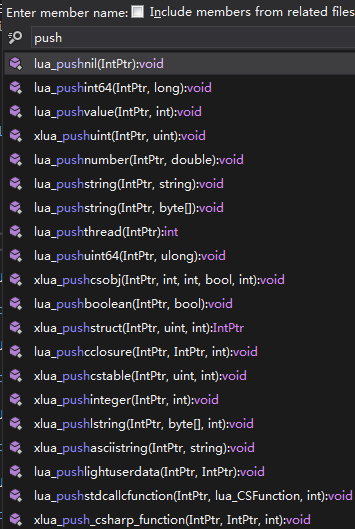 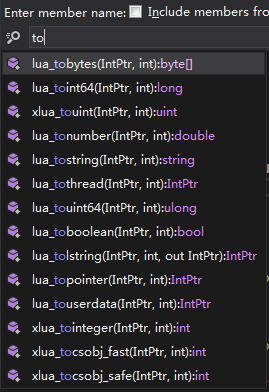 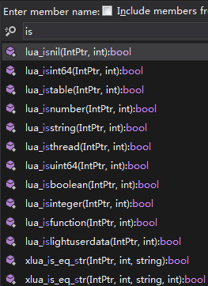 - C#中LuaEnv: Lua虚拟机实例化时，会调用
translator = new ObjectTranslator(this, rawL);,可以通过partial class ObjectTranslator的静态成员初始化方法，将XXXBridge（C#CallLua）和XXXWrap(LuaCallC#)注册到LuaEnv中,大家都在一个虚拟机中，好办事。
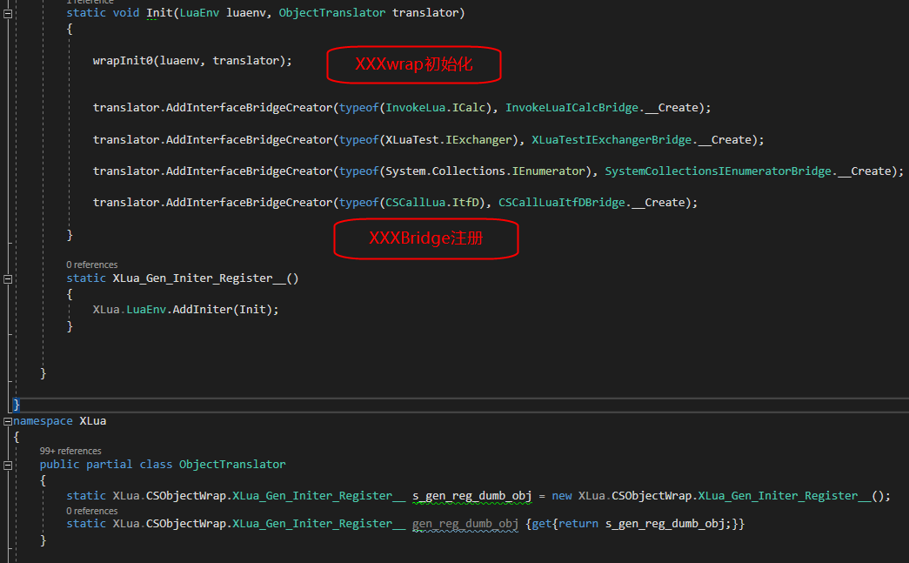
三方面解释
C#调用xLua
使用[CSharpCallLua]特性，点击xLua-Generate Code后之后，会生成对应的XXXBridge类。
- 声明C# XXXInterface调用Lua方法和变量：
- 目的是为了映射Lua中定义的Table的方法/变量。
- 原理是自动生成的XXXInterfaceBridge类（此类会在
XLuaGenAutoRegister.cs文件中被partial ObjectTranslator注册）中会使用LuaAPI.xlua_pgettable获取Lua代码中对应的table。
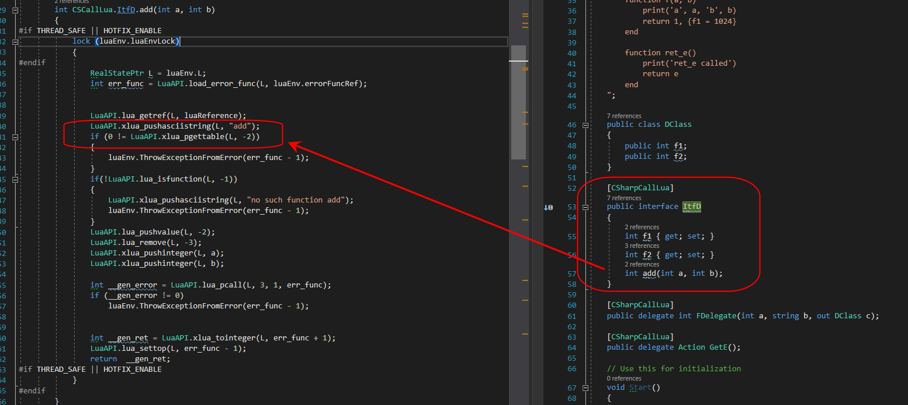
这里为什么是-2？猜测是前一个
LuaAPI.xlua_pushasciistring(L, "add")传递了2个变量（byte[]和length）到栈中，纯属瞎猜，未验证。
- 声明C# Delegate调用Lua方法：
- 目的是为了映射Lua中定义的function。
- 原理是自动生成的
C#方法 __Gen_Delegate_Imp12345xxx（此方法会在DelegateGensBridge.cs文件被partial class DelegateBridge的父类方法注册）中会使用LuaAPI.pcall_prepare，LuaAPI.lua_pushXXX，LuaAPI.lua_pcall以及LuaAPI.xlua_toXXX分别实现调用准备，参数传递，Lua方法调用和Lua返回值转换的工作。
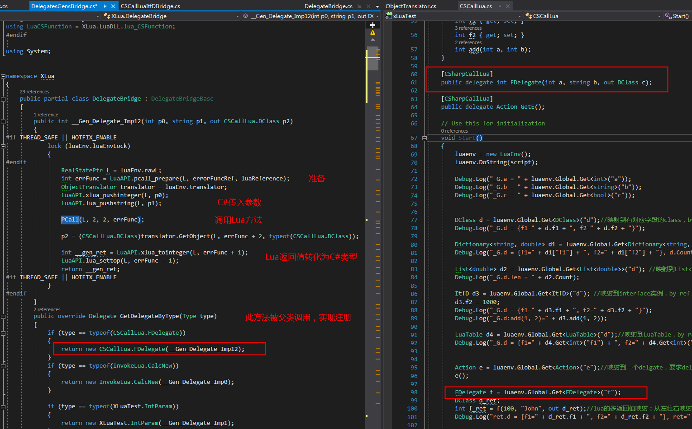 - (此条只做笔记，不必深究)注册的实现：
3.1FDelegate f = luaenv.Global.Get<FDelegate>("f");会走到下一步
3.2 ObjectTranslator的public object GetObject(RealStatePtr L, int index, Type type)方法中，此方法会使用objectCasters.GetCaster(type)(L, index, null)
3.3 ObjectCast的public ObjectCast GetCaster(Type type)通过genCaster调用translator.CreateDelegateBridge(L, type, idx);
3.4 ObjectTranslator的public object CreateDelegateBridge(RealStatePtr L, Type delegateType, int idx)通过getDelegate调用bridge.GetDelegateByType(delegateType);
3.5public abstract class DelegateBridgeBase的虚方法public virtual Delegate GetDelegateByType(Type type)被子类DelegateBridge复写，并在子类中实现C#委托和生成代码的映射绑定。
xLua调用C#
使用[LuaCallCSharp]特性，点击xLua-Generate Code后之后，会生成对应的XXXWrap类。
- XXXWrap类中生成对C#的方法和变量的访问代码LuaCSFunctionXXX。这里的LuaCSFunction是一个委托的定义：
using LuaCSFunction = XLua.LuaDLL.lua_CSFunction;
public delegate int lua_CSFunction(IntPtr L);
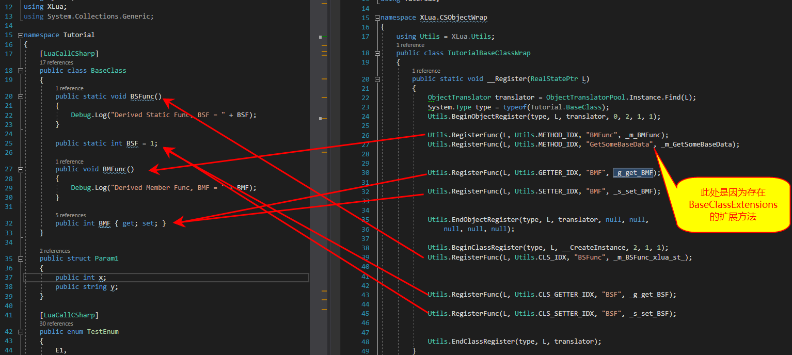 - 每个LuaCSFunctionXXX的实现再根据C#的具体实现去使用
LuaAPI.xlua_toXXX、C#方法调用、LuaAPI.lua_pushXXX来实现Lua数据传入转换，C#方法调用，C#值返回值入栈供Lua获取等。
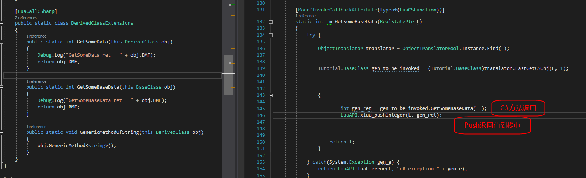 - 通过
LuaAPI.lua_pushstdcallcfunction(L, func);将访问代码LuaCSFunctionXXX入栈，此行为也发生在partial class ObjectTranslator的静态成员初始化方法中。
入到Lua中哪里？我猜下一点可以给我们答案。
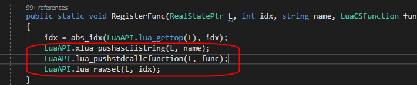
- Lua通过
CS.NameSpace.ClassName（如CS.Tutorial.BaseClass）访问栈中的方法，所有C#类的访问代码都被放到了 名为CS的模块（ 即“Lua Table”）中
热更新原理
热更新的原则是对所有较大可能变动的类型加上Hotfix特性标识。
热更新的原理是在第一个发布版本前，预留业务代码的CSharpCallLua的方式，之后如果需要在线修复一些问题，就通过C#调用Lua脚本，变更业务代码的执行即可。
使用[Hotfix]特性，点击xLua-Generate Code后之后，并不会[CSharpCallLua]那样生成对应的XXXBridge类。
而是当点击xLua-Hotfix Inject In Editor后，会使用Mono.Cecil库对生成的Assembly-CSharp.dll进行注入，怎么注入，反编译下被注入前后的dll看看。
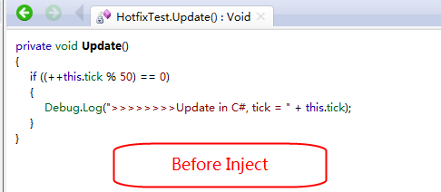
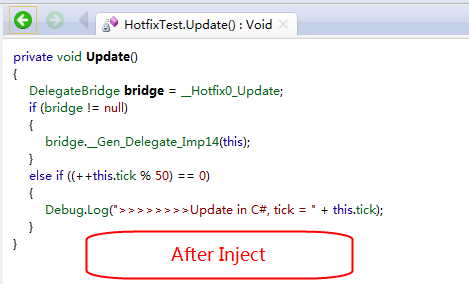
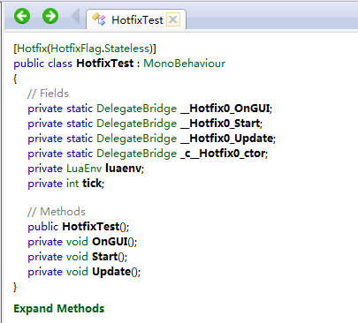
- 可以看出，被[Hotfix]特性标识的每个方法在调用前都预留了DelegateBridge委托的调用，这里的委托的实现跟第一点中C#调用xLua的处理类似，也是一些值传递的处理与调用。
- 当Lua脚本中调用xlua.hotfix时，就会使得上述C#预留的委托调用可以执行Lua脚本并获取Lua脚本的返回值
xlua.hotfix(CS.HotfixTest, 'Update', function(self) self.tick = self.tick + 1 if (self.tick % 50) == 0 then print('<<<<<<<<Update in lua, tick = ' .. self.tick) end end)